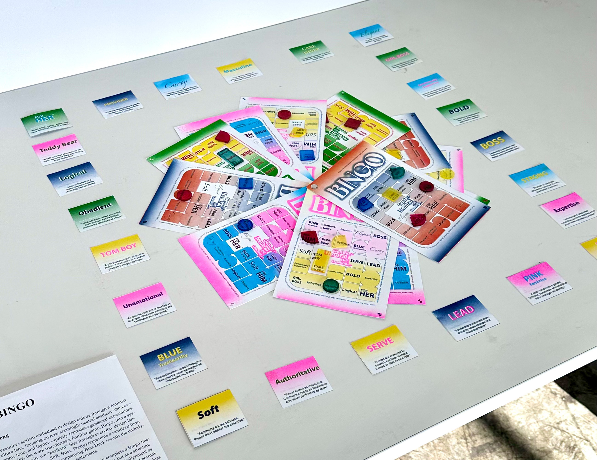
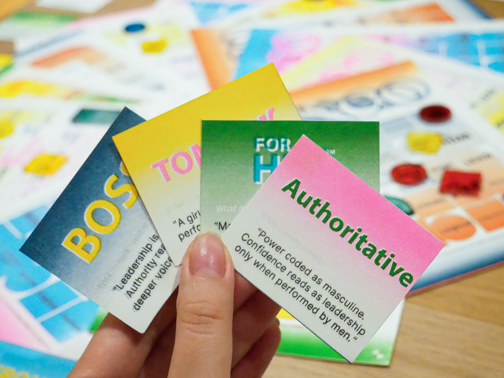
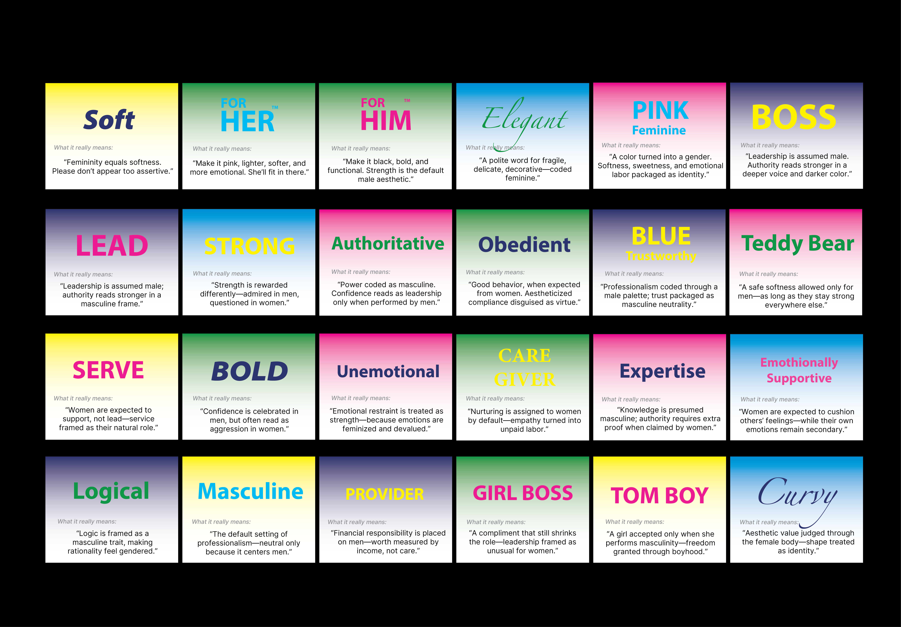

Bias Bingo
Concept
Bias Bingo uses the familiar format of a Bingo game to expose how gender bias quietly operates within everyday design language. Words that often appear neutral or even positive—such as Soft, Boss, or Pretty—are revealed as carriers of subtle stereotypes that influence how gender is perceived and categorized. By reframing these terms as game elements, the project invites players to recognize how normalized and unnoticed such biases have become.
Overview
Each square on the Bingo board is paired with a corresponding Bias Deck card, which unpacks the social assumptions embedded in the word. Through play, participants begin to notice how quickly these terms accumulate, forming a complete Bingo line with surprising ease. This speed is intentional: it becomes part of the critique, suggesting that gender bias is not exceptional or rare, but already internalized through repeated exposure.
Visually, the project reinforces this idea through material choices. The slight misregistration and misalignment of RISO printing mirrors how gender norms are continually reproduced with small variations, yet rarely questioned. Transparent acrylic markers layer over the board, symbolizing how bias builds gradually over time—often invisible in isolation, but unmistakable in accumulation.






pick your token
and place it
